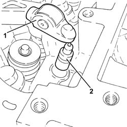

1036H56 HYDRAULIC TAPPET (ONE) AND VALVE CONTROL ROCKER (ONE) - R R WITH CAMSHAFT REMOVED
- Path
- Procedures > 10 ENGINE > 1036 TIMING SYSTEM > 1036H TAPPETS AND ROCKER SHAFTS > 1036H56 HYDRAULIC TAPPET (ONE) AND VALVE CONTROL ROCKER (ONE) - R R WITH CAMSHAFT REMOVED
- Kind
- repair procedure (removal / refitting; the operation number is the code)
- Applies to
- engines: 2.2; all production periods
- Interactive page
- https://sloeber94.github.io/elrnDB-fCrm/en/#/194000280
Applies to: engines: 2.2; all production periods
 Removing
Removing
 Refitting
Refitting1. Remove the rocker controlling the relevant valve.
2. Remove the associated hydraulic tappet.

Applies to: engines: 2.2; all production periods
Refitting
Removing- Lubricate the hydraulic tappet with engine oil and replace in its seat.
- Lubricate the valve control rocker with engine oil and replace in its seat.